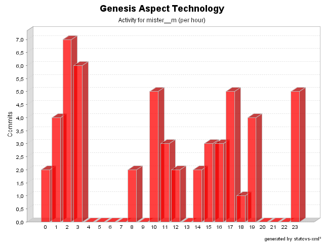

| Login: mister__m Fullname: mister__m Revisions: 54 Lines of Code: 756 Added Lines of Code: 1189 Lines of Code per Change: 14,0 |

| Date | Author | File/Message |
|---|---|---|
| 26/08/05 11:43 | mister__m | Merged with 2.3-RC1 (issue # 262)
(1 Files changed,
49 Lines changed) src/net/java/dev/genesis/aspect/FormMetadataFactoryAspect.java 1.28
(+49
-6)
|
| 21/07/05 12:01 | mister__m | Merged with 2.2 (issue # 221).
(2 Files changed,
101 Lines changed) src/net/java/dev/genesis/aspect/FormControllerFactoryAspect.java 1.7
(+0
-8)
src/net/java/dev/genesis/aspect/TimeoutAspect.java 1.9
(+101
-15)
|
| 13/05/05 23:43 | mister__m | Merged with 2.2-RC1 (issue # 221)
(2 Files changed,
22 Lines changed) src/net/java/dev/genesis/aspect/FormMetadataFactoryAspect.java 1.27
(+3
-0)
src/net/java/dev/genesis/aspect/FormControllerFactoryAspect.java 1.6
(+19
-0)
|
| 11/03/05 17:37 | mister__m | Changes related to issue # 197.
(1 Files changed,
1 Lines changed) src/net/java/dev/genesis/aspect/FormMetadataFactoryAspect.java 1.25
(+1
-1)
|
| 08/03/05 10:07 | mister__m | Check for no suitable constructor added (related to issue # 212 ).
(1 Files changed,
5 Lines changed) src/net/java/dev/genesis/aspect/ParameterizedMixinFactory.java 1.3
(+5
-0)
|
| 08/03/05 03:18 | mister__m | More changes related to issue # 212
(6 Files changed,
195 Lines changed) src/net/java/dev/genesis/aspect/ViewMetadataFactoryAspect.java 1.4
(+2
-1)
src/net/java/dev/genesis/aspect/CommandInvocationAspect.java 1.8
(+5
-3)
src/net/java/dev/genesis/aspect/CriteriaCommandExecutionAspect.java 1.14
(+1
-1)
src/net/java/dev/genesis/aspect/TimeoutAspect.java 1.8
(+16
-5)
src/net/java/dev/genesis/aspect/FormMetadataFactoryAspect.java 1.23
(+7
-3)
src/net/java/dev/genesis/aspect/ParameterizedMixinFactory.java 1.2
(+164
-50)
|
| 28/02/05 19:34 | mister__m | Merged with 2.1-RC1 as specified by issue # 199.
(4 Files changed,
108 Lines changed) src/net/java/dev/genesis/aspect/ThinletMetadataFactoryAspect.java 1.7
(+14
-46)
src/net/java/dev/genesis/aspect/FormControllerFactoryAspect.java 1.4
(+2
-6)
src/annotation.properties 1.11
(+1
-0)
src/net/java/dev/genesis/aspect/ViewMetadataFactoryAspect.java 1.2 added 91 |
| 18/01/05 00:28 | mister__m | Fix for issue # 172.
(1 Files changed,
10 Lines changed) src/net/java/dev/genesis/aspect/ThinletMetadataFactoryAspect.java 1.6
(+10
-14)
|
| 14/01/05 08:47 | mister__m | Additional changes regarding issue # 105.
(1 Files changed,
1 Lines changed) src/net/java/dev/genesis/aspect/FormControllerFactoryAspect.java 1.3
(+1
-1)
|
| 14/01/05 01:47 | mister__m | Changes related to issue # 105.
(2 Files changed,
38 Lines changed) src/net/java/dev/genesis/aspect/FormMetadataFactoryAspect.java 1.20
(+7
-16)
src/net/java/dev/genesis/aspect/FormControllerFactoryAspect.java 1.2
(+31
-12)
|